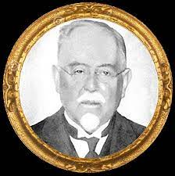
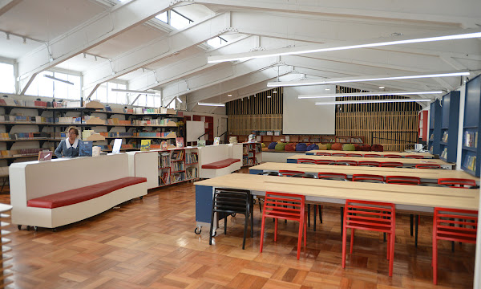

El Colegio Claudio Matte fue fundado el 12 de agosto de 1964, iniciando sus servicios como Escuela Básica Nº75. Nuestro edificio fue construido gracias a los aportes de la Sociedad de Instrucción Primaria y de la entonces denominada “Alianza para el Progreso”, del Gobierno de los Estados Unidos.
Con más de 50 años de trayectoria, nos caracterizamos por ser un establecimiento que ofrece una de las alternativas educacionales más confiables de la comuna de La Granja, atendiendo actualmente a los alumnos desde Prekínder a IV° Medio.
Nuestro colegio debe su nombre a quien fuera uno de los máximos benefactores e impulsores de la Sociedad de Instrucción Primaria, don Claudio Matte Pérez, presidente de la institución entre los años 1892 a 1956 y creador del método de lectoescritura que lleva su apellido, el Método Matte, el cual aún se sigue impartiendo en todos los colegios SIP en los que se cuenta con enseñanza básica. Además, Claudio Matte fue rector de la Universidad de Chile, diputado y ministro de Estado.
 